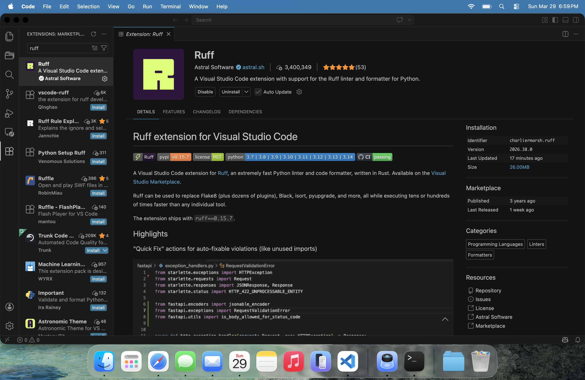

What Ruff actually is
Ruff is two tools in one:
- A linter: it reads your code and flags problems, like unused imports, undefined variables, badly named variables, and bug-prone patterns.
- A formatter: it rewrites your code's spacing, quotes, and line wrapping to a consistent style, similar to Black.
Historically, people used several separate tools for this: Black for formatting, Flake8 for linting, isort for import sorting, pyupgrade for modernizing syntax. Ruff replaces all of them in one very fast tool, which is why it has become the standard.

Once this is set up, you really do not think about formatting anymore. You just write code and save.
Install Ruff
Go to Extensions in VS Code, search for Ruff, and install the one by Astral Software.
Make it run automatically
You want Ruff to:
Every saved Python file gets checked automatically.
Small formatting and linting problems get cleaned up for you.
Imports are sorted and cleaned without manual work.
That is controlled by your VS Code settings.json. A
working setup looks like this:
{
"[python]": {
"editor.defaultFormatter": "charliermarsh.ruff",
"editor.formatOnSave": true,
"editor.codeActionsOnSave": {
"source.fixAll.ruff": "explicit",
"source.organizeImports.ruff": "explicit"
}
}
}In plain terms: for Python files, use Ruff as the formatter, format every time you save, and while you are at it, apply safe fixes and organize imports.
The pyproject.toml: your one config file
Ruff's behavior, like line length, naming style, which rules run,
and formatting preferences, is controlled by a file called
pyproject.toml.
Where to put it (this matters)
Put pyproject.toml at the base of your
project directory (the top-level folder, usually where
your Git repo starts). Ruff configuration cascades:
when Ruff checks a file, it walks up the directory tree from that
file until it finds the nearest pyproject.toml, and
uses that.
So with a layout like this:
my_project/
├── pyproject.toml <-- one config here
├── analysis/
│ └── clean_data.py <-- uses it
├── notebooks/
│ └── explore.ipynb <-- uses it
└── scripts/
└── run_all.py <-- uses itOne file at the top governs every Python file and notebook below it. You do not need to copy the config into subfolders. And if a subfolder ever needs different rules, you can drop another config there and it wins for that subtree, since the nearest config takes priority.
The full config
Here is the complete pyproject.toml Ruff section we
recommend. Copy it, paste it into a file named
pyproject.toml at the base of your project, and you
are done. Every line is explained below.
[tool.ruff]
line-length = 100
target-version = "py311"
preview = true
[tool.ruff.lint]
select = [
# Core correctness
"E", # pycodestyle errors
"F", # pyflakes
# Naming conventions
"N", # pep8-naming (snake_case vars, CamelCase classes)
# Imports
"I", # import sorting
# Bug detection
"B", # flake8-bugbear
# Modernization
"UP", # pyupgrade
# Code quality
"SIM", # simplify
"C4", # comprehensions
"ARG", # unused arguments
# Ruff-specific best practices
"RUF",
]
# Formatter owns line length
ignore = [
"E501",
]
# Allow Ruff to autofix aggressively
fixable = ["ALL"]
unfixable = []
# Notebook-specific behavior
[tool.ruff.lint.per-file-ignores]
# Notebooks are cell-scoped, so allow imports that appear unused
# You will control imports explicitly with an imports cell if needed
"*.ipynb" = [
"E402", # imports not at top of file
]
[tool.ruff.format]
quote-style = "single"
indent-style = "space"
skip-magic-trailing-comma = true
docstring-code-format = trueLine by line: what every setting does
[tool.ruff] — the top-level settings
line-length = 100
Lines longer than 100 characters get wrapped by the formatter.
The old-school default is 79, which is cramped on modern screens;
100 is a comfortable middle ground.
target-version = "py311"
Tells Ruff to assume Python 3.11. This matters because Ruff only
suggests modern syntax that is actually valid for your version.
Example: on 3.11, Ruff can rewrite Optional[int]
as int | None. On an older target it would not.
preview = true
Enables Ruff's newest rules and formatting behavior that are not
fully stabilized yet. You get improvements early; occasionally a
rule changes between versions. Fine for personal projects.
[tool.ruff.lint] — which rules run
The select list turns on groups of
rules. Each two-letter code is a whole family, mostly named after
the older standalone tool it absorbed:
E
pycodestyle errors: basic Python style, like spacing around
operators and indentation.
Flags x=1 and fixes it to x = 1.
F
pyflakes: likely real bugs, like undefined variables and unused
imports.
Flags import os when os is never
used, and catches typos like using reslut when you
defined result.
N
pep8-naming: enforces Python naming conventions, like
snake_case for variables and functions and
CamelCase for classes.
Underlines myVariable = 3 and suggests
my_variable. (Note: it underlines, it does not
rename for you. See the warning below.)
I
import sorting (replaces isort): keeps imports grouped and
alphabetized: standard library first, then third-party packages,
then your own modules.
Reorders import pandas above your own
import my_utils, but below import os.
B
flake8-bugbear: patterns that are legal Python but cause real
bugs.
Flags def f(items=[]): a mutable default argument
is shared between calls, a classic Python trap.
UP
pyupgrade: rewrites old syntax into the modern equivalent for
your target version.
Rewrites "hello %s" % name as
f"hello {name}", and List[int] as
list[int].
SIM
simplify: flags code that can be written more directly.
Rewrites if x == True: as if x:, and
collapses nested if a: if b: into
if a and b:.
C4
comprehensions: cleaner list, set, and dict construction.
Rewrites list(x for x in y) as
[x for x in y].
ARG
unused arguments: flags function parameters that are never used
in the body, often leftovers from refactoring.
Flags verbose in def run(data,
verbose): if the function never touches it.
RUF
Ruff-specific best practices that do not fit the older tools'
categories.
Flags implicitly concatenated strings and unnecessary
# noqa comments that no longer suppress anything.
ignore, fixable, unfixable
ignore = ["E501"]
E501 is the "line too long" lint warning. We turn it off
because the formatter already wraps long lines on save.
Without this, you would get warnings about lines the formatter is
about to fix anyway. Hence the comment: the formatter owns line
length.
fixable = ["ALL"]
Any rule that has a safe automatic fix is allowed to apply it.
This is what makes save-and-forget work.
unfixable = []
An empty blocklist: there are no rules we forbid Ruff from
fixing. If you ever wanted Ruff to flag something but never touch
it, you would list that rule code here.
Per-file ignores: the notebook exception
"*.ipynb" = ["E402"]
E402 says "imports must be at the top of the file." That makes
sense for scripts, but notebooks are cell-based: it is normal to
import matplotlib in cell 12 while exploring. This
line disables that one rule, only for notebook files. Everything
else still applies to notebooks.
[tool.ruff.format] — how code is styled
quote-style = "single"
Strings use single quotes.
"hello" becomes 'hello' on save.
Purely aesthetic; the point is that it is consistent everywhere.
indent-style = "space"
Indent with spaces, not tabs. The universal Python convention.
skip-magic-trailing-comma = true
Normally, a trailing comma after the last item "magically" forces
the formatter to keep a list split one-item-per-line. This
disables that: line length alone decides whether something is one
line or many, so formatting stays predictable.
docstring-code-format = true
If you put code examples inside docstrings, Ruff formats those
too, so your documentation examples match your real code style.
Notebooks
Ruff works on notebooks too. With the config above, notebooks are already covered, including the E402 exception. To clean a notebook manually in VS Code, use:
Cmd/Ctrl + R, then UAnd it will clean the notebook.
That is it
Do not over-engineer this. The goal is:
- Save your file
- Code gets cleaned automatically
Once that works, you are good.
pyproject.toml is nearest to the file wins.
Give me a Ruff config toml with 100 character line length, snake_case, and auto-fixing.